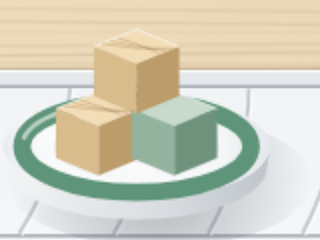
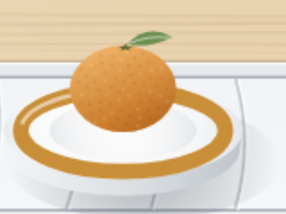
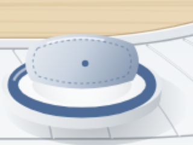
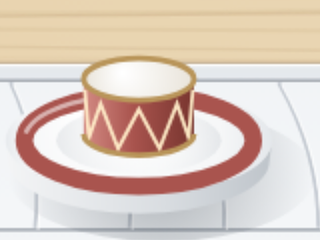
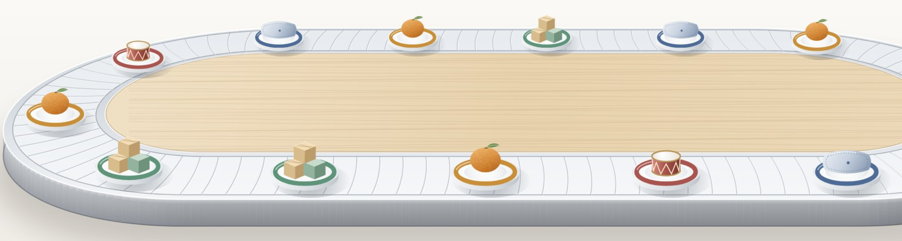

○○교육청 유아교육과 · 오후의 순서
오후 다섯 시간이
한 줄로 돕니다
- 놀이
교실 · 바깥에서 고른 놀이
- 간식
함께 차리고 함께 치운다
- 쉼
눕거나 조용히 책 보기
- 특성화 활동
요일마다 다른 활동
- 놀이
데리러 올 때까지
14:00 → 19:00매일 운행
접시 테 유약 = 활동
레일은 같고
접시는 아이가 고릅니다

놀이날마다 스스로 고른다

간식먹을 만큼 덜어 먹는다

쉼자지 않아도 쉴 수 있다

특성화 활동하고 싶은 것만 신청한다
접시 4종매일 같은 차림
참고 · 도는 고리
빌려 온 본문 #115 네 군데 끊는 고리 · 내용은 다른 가상 예시
오후 차림표
가장 긴 접시는
놀이입니다
- 놀이교사는 지켜보고, 놀이는 아이가 정한다2시간 30분
- 간식알레르기 식단을 따로 차린다30분
- 쉼조명과 소리를 낮춘 방1시간
- 특성화 활동음악 · 몸놀이 · 그림책, 요일별1시간
14:00 → 19:005시간
참고 · 이어지는 비중
빌려 온 본문 #79 이어지는 재원 비중 · 내용은 다른 가상 예시
지금의 레일
열 중 일곱이
저녁까지 남습니다
방과후 과정 참여71%
전체 원아 가운데
17시 넘어 남는 아이38%
참여 원아 가운데
특성화 활동 신청2.1개
아이 한 명 평균, 주당
자료: ○○교육청 유치원 방과후 과정 운영 실태(가상 예시)
2026지금
참고 · 다시 모은 칸
빌려 온 본문 #112 원인으로 다시 모은 칸 · 내용은 다른 가상 예시
2027학년도에 바꾸는 것
접시마다
하나씩 고칩니다
- 놀이바깥 놀이를 날마다 30분 넣는다14:00
- 간식원아가 직접 덜어 먹게 한다15:00
- 쉼쉼 방을 교실과 따로 둔다15:30
- 특성화 활동신청은 학기마다, 최대 둘까지16:30
2027.3 →새 차림
매일 같은 레일 위로,
날마다 고르는 오후
문의 · ○○교육청 유아교육과 · 모든 기관 · 수치는 가상 예시

14:00 → 19:00매일 운행